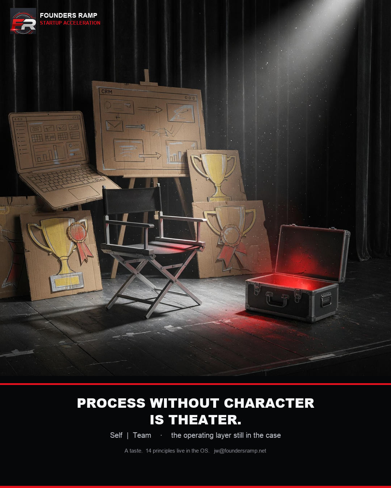

All of the approach
Leadership
Self | Team
Process without character produces theater. Lead yourself. Then lead the team.

Self
- Practice kindness and compassion. Hard standards with a soft heart.
- Love and approve of yourself. Do not manage from ego.
- I shall not fear. Ask the hard question. Lose the bad deal.
- Circles of influence and control. Work where you can act.
- Do not take yourself or the world too seriously.
Team
- Focus on the right things. Do fewer. Do them better.
- Communicate clear goals. Everyone knows the scoreboard.
- Empower people. Coach judgment. Do not hoard decisions.
- Catch people doing things right.
- Correct bad behavior. Soon. Specifically.
- Ignore bullshit. Fake pipeline is not work.
- Clear internal obstacles. That is the manager's job.
- Teach well being. Keep it positive.
- Success is we. Failure is I.
Circles of influence is Stephen Covey's language.